En bref
Blizzard a annoncé plus de 600 nouvelles recettes, sans publier la liste complète. Cette fiche rassemble les 508 recettes de Travail du cuir relevées dans les fichiers du jeu (client 1.60.1.70862, consultés le 12 novembre 2026). Les noms et les compétences requises viennent des fichiers du jeu. L’obtention indiquée « inconnu » reste à confirmer. Les tableaux sont groupés par palier de compétence requise. Quand l’obtention, la source ou la zone n’est pas indiquée dans les données consultées, la cellule le dit clairement. Aucun taux de butin n’est repris, aucun n’était indiqué.[1][2][4][3]
Points clés
- 508 recettes de Travail du cuir listées ci-dessous, d’après les fichiers du jeu (client 1.60.1.70862, 12 novembre 2026) ; l’obtention « inconnu » reste à confirmer.[4] Données du jeu (client 1.60.1.70862)
- Obtention indiquée dans les fichiers du jeu : formateur 94, butin 17, quête 12, réputation 62, inconnu 323.[4] Données du jeu (client 1.60.1.70862)
- Blizzard n’a pas publié la liste complète des recettes, ni les formateurs, vendeurs, prix ou taux de butin.[1][2]
- Composants de 508 recettes et 158 matériaux liés à leur fiche « où le trouver » (fichiers du jeu).[5] Données du jeu (client 1.60.1.70862)
Comment lire cette liste
Cette liste n’est pas officielle. Blizzard n’a pas publié le détail des recettes de ce métier (vendeurs, formateurs, monstres, zones, prix, taux de butin). Les noms et les compétences ci-dessous viennent des fichiers du jeu (client 1.60.1.70862). L’obtention « inconnu » reste à confirmer. Le nom français est celui de la localisation du jeu lorsqu’il a été trouvé ; à défaut, le nom anglais est utilisé dans les deux langues. « Formateur » couvre aussi les recettes indiquées comme apprises automatiquement avec le métier. Une page d’ensemble déjà en ligne, Recettes et plans avancés (/fr/metiers/recettes-et-plans-avances/), rappelle les règles officielles d’obtention et les recettes à butin déjà présentées par zone.[1][2][4][3]
- 508 recettes listées pour Travail du cuir.[4] Données du jeu (client 1.60.1.70862)
- Répartition dans les fichiers du jeu : formateur 94, butin 17, quête 12, réputation 62, inconnu 323.[4] Données du jeu (client 1.60.1.70862)
- Zone renseignée pour 17 recette(s) ; non indiquée pour les autres.[4] Données du jeu (client 1.60.1.70862)
Compétence 1–75 — 80 recettes (données du jeu)
| Recette | Compétence requise | Obtention | Source | Zone | Statut |
|---|---|---|---|---|---|
| Tente du camp | 1 | formateur | maître de métier (non nommé) | non indiqué | données du jeu |
| Bottes en cuir cousu main | 1 | formateur | appris automatiquement avec le métier | non indiqué | données du jeu |
| Brassards en cuir cousu main | 1 | formateur | appris automatiquement avec le métier | non indiqué | données du jeu |
| Cape en cuir cousu main | 1 | formateur | appris automatiquement avec le métier | non indiqué | données du jeu |
| Gilet en cuir cousu main | 1 | formateur | appris automatiquement avec le métier | non indiqué | données du jeu |
| Renfort d'armure léger | 1 | formateur | appris automatiquement avec le métier | non indiqué | données du jeu |
| Cuir léger | 1 | formateur | appris automatiquement avec le métier | non indiqué | données du jeu |
| Sac de composants en cuir léger | 30 | quête | Beasts of Thunder Ridge | non indiqué | données du jeu |
| Pantalon en cuir robuste | 30 | inconnu | non indiqué | non indiqué | données du jeu — obtention à confirmer |
| Mules de dragonnet noir | 35 | inconnu | non indiqué | non indiqué | données du jeu — obtention à confirmer |
| Bottes noires en cuir | 35 | inconnu | non indiqué | non indiqué | données du jeu — obtention à confirmer |
| Sac en peau de kodo | 35 | quête | Sac en peau de kodo | non indiqué | données du jeu |
| Bottes lueur-de-lune | 35 | inconnu | non indiqué | non indiqué | données du jeu — obtention à confirmer |
| Chaussures en écailles de Murloc | 35 | inconnu | non indiqué | non indiqué | données du jeu — obtention à confirmer |
| Pantalon en cuir cousu main | 37 | formateur | maître de métier (non nommé) | non indiqué | données du jeu |
| Pourpoint blanc en cuir | 40 | inconnu | non indiqué | non indiqué | données du jeu — obtention à confirmer |
| Peau légère traitée | 45 | formateur | maître de métier (non nommé) | non indiqué | données du jeu |
| Ceinture en cuir cousu main | 47 | formateur | maître de métier (non nommé) | non indiqué | données du jeu |
| Carquois en cuir léger | 47 | formateur | maître de métier (non nommé) | non indiqué | données du jeu |
| Petite giberne en cuir | 47 | formateur | maître de métier (non nommé) | non indiqué | données du jeu |
| Ceinture tisse-souffle azur | 50 | réputation | Druides et druidesses de la Noctegriffe (Amical) | non indiqué | données du jeu |
| Brassards tisse-souffle azur | 50 | réputation | Druides et druidesses de la Noctegriffe (Amical) | non indiqué | données du jeu |
| Garde-bras mêle-vent azur | 50 | réputation | Druides et druidesses de la Noctegriffe (Amical) | non indiqué | données du jeu |
| Lanière mêle-vent azur | 50 | réputation | Druides et druidesses de la Noctegriffe (Amical) | non indiqué | données du jeu |
| Ceinture tisse-souffle nuageuse | 50 | réputation | Druides et druidesses de la Noctegriffe (Amical) | non indiqué | données du jeu |
| Brassards tisse-souffle nuageux | 50 | réputation | Druides et druidesses de la Noctegriffe (Amical) | non indiqué | données du jeu |
| Garde-bras mêle-vent nuageux | 50 | réputation | Druides et druidesses de la Noctegriffe (Amical) | non indiqué | données du jeu |
| Lanière mêle-vent nuageuse | 50 | réputation | Druides et druidesses de la Noctegriffe (Amical) | non indiqué | données du jeu |
| Gants élégants en cuir | 50 | inconnu | non indiqué | non indiqué | données du jeu — obtention à confirmer |
| Bottes tisse-souffle azur | 55 | réputation | Druides et druidesses de la Noctegriffe (Amical) | non indiqué | données du jeu |
| Gants tisse-souffle azur | 55 | réputation | Druides et druidesses de la Noctegriffe (Amical) | non indiqué | données du jeu |
| Bottillons mêle-vent azur | 55 | réputation | Druides et druidesses de la Noctegriffe (Amical) | non indiqué | données du jeu |
| Mitaines mêle-vent azur | 55 | réputation | Druides et druidesses de la Noctegriffe (Amical) | non indiqué | données du jeu |
| Bottes tisse-souffle nuageuses | 55 | réputation | Druides et druidesses de la Noctegriffe (Amical) | non indiqué | données du jeu |
| Gants tisse-souffle nuageux | 55 | réputation | Druides et druidesses de la Noctegriffe (Amical) | non indiqué | données du jeu |
| Bottillons mêle-vent nuageux | 55 | réputation | Druides et druidesses de la Noctegriffe (Amical) | non indiqué | données du jeu |
| Mitaines mêle-vent nuageuses | 55 | réputation | Druides et druidesses de la Noctegriffe (Amical) | non indiqué | données du jeu |
| Gilet en cuir estampé | 57 | formateur | maître de métier (non nommé) | non indiqué | données du jeu |
| Harnais tisse-souffle azur | 60 | réputation | Druides et druidesses de la Noctegriffe (Honoré) | non indiqué | données du jeu |
| Chausses tisse-souffle azur | 60 | réputation | Druides et druidesses de la Noctegriffe (Honoré) | non indiqué | données du jeu |
| Pourpoint mêle-vent azur | 60 | réputation | Druides et druidesses de la Noctegriffe (Honoré) | non indiqué | données du jeu |
| Pantalon mêle-vent azur | 60 | réputation | Druides et druidesses de la Noctegriffe (Honoré) | non indiqué | données du jeu |
| Ceinture de bagarreur en cuir | 60 | inconnu | non indiqué | non indiqué | données du jeu — obtention à confirmer |
| Harnais tisse-souffle nuageux | 60 | réputation | Druides et druidesses de la Noctegriffe (Honoré) | non indiqué | données du jeu |
| Chausses tisse-souffle nuageuses | 60 | réputation | Druides et druidesses de la Noctegriffe (Honoré) | non indiqué | données du jeu |
| Pourpoint mêle-vent nuageux | 60 | réputation | Druides et druidesses de la Noctegriffe (Honoré) | non indiqué | données du jeu |
| Pantalon mêle-vent nuageux | 60 | réputation | Druides et druidesses de la Noctegriffe (Honoré) | non indiqué | données du jeu |
| Ceinture de défenseur en cuir | 60 | inconnu | non indiqué | non indiqué | données du jeu — obtention à confirmer |
| Ceinture de chevaucheur de tempête en cuir | 60 | inconnu | non indiqué | non indiqué | données du jeu — obtention à confirmer |
| Ceinture totémique en cuir | 60 | inconnu | non indiqué | non indiqué | données du jeu — obtention à confirmer |
| Ceinture de trappeur en cuir | 60 | inconnu | non indiqué | non indiqué | données du jeu — obtention à confirmer |
| Ceinture de sagesse en cuir | 60 | inconnu | non indiqué | non indiqué | données du jeu — obtention à confirmer |
| Cape en cuir estampé | 62 | formateur | maître de métier (non nommé) | non indiqué | données du jeu |
| Gants en cuir estampé | 62 | formateur | maître de métier (non nommé) | non indiqué | données du jeu |
| Cape élégante en cuir | 62 | formateur | maître de métier (non nommé) | non indiqué | données du jeu |
| Cape en écailles de déviant | 65 | inconnu | non indiqué | non indiqué | données du jeu — obtention à confirmer |
| Bottes élégantes en cuir | 65 | inconnu | non indiqué | non indiqué | données du jeu — obtention à confirmer |
| Gilet Lueur-de-lune | 65 | quête | Gilet Lueur-de-lune | non indiqué | données du jeu |
| Ceinture en écailles de murloc | 65 | inconnu | non indiqué | non indiqué | données du jeu — obtention à confirmer |
| Brassards en cuir léger | 67 | formateur | maître de métier (non nommé) | non indiqué | données du jeu |
| Cuir moyen | 70 | formateur | maître de métier (non nommé) | non indiqué | données du jeu |
| Cuirasse en écailles de murloc | 70 | inconnu | non indiqué | non indiqué | données du jeu — obtention à confirmer |
| Bottes en cuir estampé | 72 | formateur | maître de métier (non nommé) | non indiqué | données du jeu |
| Pantalon en cuir estampé | 72 | formateur | maître de métier (non nommé) | non indiqué | données du jeu |
| Cape de dragonnet noir | 75 | inconnu | non indiqué | non indiqué | données du jeu — obtention à confirmer |
| Tunique de dragonnet noir | 75 | inconnu | non indiqué | non indiqué | données du jeu — obtention à confirmer |
| Armure de bagarreur en cuir | 75 | inconnu | non indiqué | non indiqué | données du jeu — obtention à confirmer |
| Gants de bagarreur en cuir | 75 | butin | Gilnid | The Deadmines | données du jeu |
| Tunique noire en cuir | 75 | inconnu | non indiqué | non indiqué | données du jeu — obtention à confirmer |
| Armure de défenseur en cuir | 75 | inconnu | non indiqué | non indiqué | données du jeu — obtention à confirmer |
| Gants de défenseur en cuir | 75 | butin | Mr. Smite ; Cookie | The Deadmines | données du jeu |
| Gilet d'homme des collines en cuir | 75 | inconnu | non indiqué | non indiqué | données du jeu — obtention à confirmer |
| Armure de chevaucheur de tempête en cuir | 75 | inconnu | non indiqué | non indiqué | données du jeu — obtention à confirmer |
| Gants de chevaucheur de tempête en cuir | 75 | butin | Oggleflint ; Mr. Smite ; Deviate Faerie Dragon ; Fel Steed / Shadow Charger | Ragefire Chasm ; Shadowfang Keep ; The Deadmines ; Wailing Caverns | données du jeu |
| Armure totémique en cuir | 75 | inconnu | non indiqué | non indiqué | données du jeu — obtention à confirmer |
| Gants totémiques en cuir | 75 | butin | Bazzalan ; Gilnid ; Mr. Smite | Ragefire Chasm ; The Deadmines | données du jeu |
| Armure de trappeur en cuir | 75 | inconnu | non indiqué | non indiqué | données du jeu — obtention à confirmer |
| Gants de trappeur en cuir | 75 | butin | Gilnid ; Cookie | The Deadmines | données du jeu |
| Armure de sagesse en cuir | 75 | inconnu | non indiqué | non indiqué | données du jeu — obtention à confirmer |
| Gants de sagesse en cuir | 75 | butin | Oggleflint ; Taragaman the Hungerer ; Bazzalan ; Gilnid ; Mr. Smite ; Fel Steed / Shadow Charger | Ragefire Chasm ; Shadowfang Keep ; The Deadmines | données du jeu |
Compétence 76–150 — 95 recettes (données du jeu)
| Recette | Compétence requise | Obtention | Source | Zone | Statut |
|---|---|---|---|---|---|
| Ceinture élégante en cuir | 77 | formateur | maître de métier (non nommé) | non indiqué | données du jeu |
| Gants en écailles de déviant | 80 | inconnu | non indiqué | non indiqué | données du jeu — obtention à confirmer |
| Pantalon élégant en cuir | 80 | inconnu | non indiqué | non indiqué | données du jeu — obtention à confirmer |
| Renfort d’armure moyen énergique | 80 | inconnu | non indiqué | non indiqué | données du jeu — obtention à confirmer |
| Renfort d’armure moyen mystique | 80 | inconnu | non indiqué | non indiqué | données du jeu — obtention à confirmer |
| Tunique élégante en cuir | 82 | formateur | maître de métier (non nommé) | non indiqué | données du jeu |
| Bottes de bagarreur en cuir | 85 | inconnu | non indiqué | non indiqué | données du jeu — obtention à confirmer |
| Peau moyenne traitée | 85 | formateur | maître de métier (non nommé) | non indiqué | données du jeu |
| Bottes de défenseur en cuir | 85 | inconnu | non indiqué | non indiqué | données du jeu — obtention à confirmer |
| Renfort d'armure moyen | 85 | formateur | maître de métier (non nommé) | non indiqué | données du jeu |
| Bottes de chevaucheur de tempête en cuir | 85 | inconnu | non indiqué | non indiqué | données du jeu — obtention à confirmer |
| Bottes totémiques en cuir | 85 | inconnu | non indiqué | non indiqué | données du jeu — obtention à confirmer |
| Bottes de trappeur en cuir | 85 | inconnu | non indiqué | non indiqué | données du jeu — obtention à confirmer |
| Bottes de sagesse en cuir | 85 | inconnu | non indiqué | non indiqué | données du jeu — obtention à confirmer |
| Ceinture en écailles de déviant | 90 | quête | Deviate Eradication | non indiqué | données du jeu |
| Pantalon en cuir léger | 92 | formateur | maître de métier (non nommé) | non indiqué | données du jeu |
| Bottes en cuir gris | 94 | formateur | maître de métier (non nommé) | non indiqué | données du jeu |
| Gants noirs en cuir | 95 | inconnu | non indiqué | non indiqué | données du jeu — obtention à confirmer |
| Ceinture d'homme des collines | 95 | inconnu | non indiqué | non indiqué | données du jeu — obtention à confirmer |
| Gants en cuir de dragonnet rouge | 95 | inconnu | non indiqué | non indiqué | données du jeu — obtention à confirmer |
| Chaperon de bagarreur en cuir | 100 | butin | Lady Sarevess | Blackfathom Deeps | données du jeu |
| Pantalon de bagarreur en cuir | 100 | inconnu | non indiqué | non indiqué | données du jeu — obtention à confirmer |
| Chaperon de défenseur en cuir | 100 | butin | Edwin VanCleef | The Deadmines | données du jeu |
| Pantalon de défenseur en cuir | 100 | inconnu | non indiqué | non indiqué | données du jeu — obtention à confirmer |
| Chaperon de chevaucheur de tempête en cuir | 100 | inconnu | non indiqué | non indiqué | données du jeu — obtention à confirmer |
| Pantalon de chevaucheur de tempête en cuir | 100 | inconnu | non indiqué | non indiqué | données du jeu — obtention à confirmer |
| Chaperon totémique en cuir | 100 | butin | Edwin VanCleef ; Fel Steed / Shadow Charger ; Ghamoo-ra | Blackfathom Deeps ; Shadowfang Keep ; The Deadmines | données du jeu |
| Pantalon totémique en cuir | 100 | inconnu | non indiqué | non indiqué | données du jeu — obtention à confirmer |
| Chaperon de trappeur en cuir | 100 | butin | Edwin VanCleef ; Fel Steed / Shadow Charger | Shadowfang Keep ; The Deadmines | données du jeu |
| Pantalon de trappeur en cuir | 100 | inconnu | non indiqué | non indiqué | données du jeu — obtention à confirmer |
| Chaperon de sagesse en cuir | 100 | butin | Edwin VanCleef ; Fel Steed / Shadow Charger | Shadowfang Keep ; The Deadmines | données du jeu |
| Pantalon de sagesse en cuir | 100 | inconnu | non indiqué | non indiqué | données du jeu — obtention à confirmer |
| Cape noire en cuir | 104 | formateur | maître de métier (non nommé) | non indiqué | données du jeu |
| Pantalon noir en cuir | 109 | formateur | maître de métier (non nommé) | non indiqué | données du jeu |
| Tunique de bagarreur en cuir | 110 | inconnu | non indiqué | non indiqué | données du jeu — obtention à confirmer |
| Tunique de défenseur en cuir | 110 | inconnu | non indiqué | non indiqué | données du jeu — obtention à confirmer |
| Epaulières terrestres en cuir | 110 | inconnu | non indiqué | non indiqué | données du jeu — obtention à confirmer |
| Gants d'herboriste | 110 | inconnu | non indiqué | non indiqué | données du jeu — obtention à confirmer |
| Bottes d’homme des collines en cuir | 110 | inconnu | non indiqué | non indiqué | données du jeu — obtention à confirmer |
| Tunique de chevaucheur de tempête en cuir | 110 | inconnu | non indiqué | non indiqué | données du jeu — obtention à confirmer |
| Tunique totémique en cuir | 110 | inconnu | non indiqué | non indiqué | données du jeu — obtention à confirmer |
| Tunique de trappeur en cuir | 110 | inconnu | non indiqué | non indiqué | données du jeu — obtention à confirmer |
| Tunique de sagesse en cuir | 110 | inconnu | non indiqué | non indiqué | données du jeu — obtention à confirmer |
| Gants d'agilité en cuir | 114 | formateur | maître de métier (non nommé) | non indiqué | données du jeu |
| Armure en cuir raffermi | 114 | formateur | maître de métier (non nommé) | non indiqué | données du jeu |
| Epaulières noires en cuir | 115 | inconnu | non indiqué | non indiqué | données du jeu — obtention à confirmer |
| Gants de chapardeur | 115 | inconnu | non indiqué | non indiqué | données du jeu — obtention à confirmer |
| Ceinture noire en cuir | 119 | formateur | maître de métier (non nommé) | non indiqué | données du jeu |
| Gants de fabricant d'arcs | 119 | formateur | maître de métier (non nommé) | non indiqué | données du jeu |
| Gants terrestres lourds | 120 | inconnu | non indiqué | non indiqué | données du jeu — obtention à confirmer |
| Cuir lourd | 120 | formateur | maître de métier (non nommé) | non indiqué | données du jeu |
| Epaulières d'homme des collines | 124 | formateur | maître de métier (non nommé) | non indiqué | données du jeu |
| Gants barbares | 125 | inconnu | non indiqué | non indiqué | données du jeu — obtention à confirmer |
| Casque de bagarreur en cuir | 125 | inconnu | non indiqué | non indiqué | données du jeu — obtention à confirmer |
| Garde-jambes de bagarreur en cuir | 125 | butin | Gelihast ; Twilight Lord Kelris ; Dextren Ward ; Aggem Thorncurse | Blackfathom Deeps ; Razorfen Kraul ; The Stockade | données du jeu |
| Casque de défenseur en cuir | 125 | inconnu | non indiqué | non indiqué | données du jeu — obtention à confirmer |
| Kilt de défenseur en cuir | 125 | butin | Baron Aquanis ; Twilight Lord Kelris ; Bloodmage Thalnos | Blackfathom Deeps ; Scarlet Monastery: Graveyard | données du jeu |
| Balle en cuir lourd | 125 | inconnu | non indiqué | non indiqué | données du jeu — obtention à confirmer |
| Casque de chevaucheur de tempête en cuir | 125 | inconnu | non indiqué | non indiqué | données du jeu — obtention à confirmer |
| Kilt de chevaucheur de tempête en cuir | 125 | butin | Aku'mai ; Bazil Thredd | Blackfathom Deeps ; The Stockade | données du jeu |
| Casque totémique en cuir | 125 | inconnu | non indiqué | non indiqué | données du jeu — obtention à confirmer |
| Jambières totémiques en cuir | 125 | butin | Twilight Lord Kelris | Blackfathom Deeps | données du jeu |
| Casque de trappeur en cuir | 125 | inconnu | non indiqué | non indiqué | données du jeu — obtention à confirmer |
| Garde-jambes de trappeur en cuir | 125 | butin | Gelihast ; Twilight Lord Kelris ; Aku'mai ; Dextren Ward ; Overlord Ramtusk | Blackfathom Deeps ; Razorfen Kraul ; The Stockade | données du jeu |
| Casque de sagesse en cuir | 125 | inconnu | non indiqué | non indiqué | données du jeu — obtention à confirmer |
| Jambières de sagesse en cuir | 125 | butin | Gelihast ; Old Serra'kis ; Twilight Lord Kelris ; Kam Deepfury | Blackfathom Deeps ; The Stockade | données du jeu |
| Gants en cuir raffermi | 129 | formateur | maître de métier (non nommé) | non indiqué | données du jeu |
| Brassards barbares | 130 | inconnu | non indiqué | non indiqué | données du jeu — obtention à confirmer |
| Peau lourde traitée | 130 | formateur | maître de métier (non nommé) | non indiqué | données du jeu |
| Armure verte en cuir | 130 | inconnu | non indiqué | non indiqué | données du jeu — obtention à confirmer |
| Renfort d’armure lourd énergique | 135 | inconnu | non indiqué | non indiqué | données du jeu — obtention à confirmer |
| Renfort d’armure lourd mystique | 135 | inconnu | non indiqué | non indiqué | données du jeu — obtention à confirmer |
| Gants d'homme des collines en cuir | 139 | formateur | maître de métier (non nommé) | non indiqué | données du jeu |
| Jambières en cuir mat | 140 | inconnu | non indiqué | non indiqué | données du jeu — obtention à confirmer |
| Renfort d'armure lourd | 140 | formateur | maître de métier (non nommé) | non indiqué | données du jeu |
| Giberne en cuir lourd | 140 | formateur | maître de métier (non nommé) | non indiqué | données du jeu |
| Carquois lourd | 140 | formateur | maître de métier (non nommé) | non indiqué | données du jeu |
| Cape d'homme des collines | 140 | formateur | maître de métier (non nommé) | non indiqué | données du jeu |
| Ceinture en peau de raptor | 140 | inconnu | non indiqué | non indiqué | données du jeu — obtention à confirmer |
| Harnais en peau de raptor | 140 | inconnu | non indiqué | non indiqué | données du jeu — obtention à confirmer |
| râtelier de tannage | 140 | inconnu | non indiqué | non indiqué | données du jeu — obtention à confirmer |
| Jambières barbares | 145 | inconnu | non indiqué | non indiqué | données du jeu — obtention à confirmer |
| Ceinture de gardien | 145 | inconnu | non indiqué | non indiqué | données du jeu — obtention à confirmer |
| Armure épaisse de murloc | 145 | inconnu | non indiqué | non indiqué | données du jeu — obtention à confirmer |
| Ceinture verte en cuir | 150 | formateur | maître de métier (non nommé) | non indiqué | données du jeu |
| Armure de dragonnet vert | 150 | inconnu | non indiqué | non indiqué | données du jeu — obtention à confirmer |
| Armure de gardien | 150 | inconnu | non indiqué | non indiqué | données du jeu — obtention à confirmer |
| Pantalon de gardien | 150 | formateur | maître de métier (non nommé) | non indiqué | données du jeu |
| Ceinture de soigneur en cuir | 150 | inconnu | non indiqué | non indiqué | données du jeu — obtention à confirmer |
| Ceinture de rôdeur en cuir | 150 | inconnu | non indiqué | non indiqué | données du jeu — obtention à confirmer |
| Ceinture d’escarmouche en cuir | 150 | inconnu | non indiqué | non indiqué | données du jeu — obtention à confirmer |
| Ceinture de furtivité en cuir | 150 | inconnu | non indiqué | non indiqué | données du jeu — obtention à confirmer |
| Ceinture de mande-ciel en cuir | 150 | inconnu | non indiqué | non indiqué | données du jeu — obtention à confirmer |
| Ceinture de traqueur en cuir | 150 | inconnu | non indiqué | non indiqué | données du jeu — obtention à confirmer |
| Ceinture de garde en cuir | 150 | inconnu | non indiqué | non indiqué | données du jeu — obtention à confirmer |
Compétence 151–225 — 102 recettes (données du jeu)
| Recette | Compétence requise | Obtention | Source | Zone | Statut |
|---|---|---|---|---|---|
| Ceinture en cuir clouté de gemmes | 160 | inconnu | non indiqué | non indiqué | données du jeu — obtention à confirmer |
| Cape de gardien | 160 | inconnu | non indiqué | non indiqué | données du jeu — obtention à confirmer |
| Epaulières barbares | 165 | formateur | maître de métier (non nommé) | non indiqué | données du jeu |
| Armure en cuir mat | 165 | formateur | maître de métier (non nommé) | non indiqué | données du jeu |
| Gants du Grandpère | 165 | inconnu | non indiqué | non indiqué | données du jeu — obtention à confirmer |
| Brassards de dragonnet vert | 165 | inconnu | non indiqué | non indiqué | données du jeu — obtention à confirmer |
| Brassards en écailles de murloc | 165 | inconnu | non indiqué | non indiqué | données du jeu — obtention à confirmer |
| Peau épaisse traitée | 170 | formateur | maître de métier (non nommé) | non indiqué | données du jeu |
| Cape de givre en cuir | 170 | formateur | maître de métier (non nommé) | non indiqué | données du jeu |
| Brassards verts en cuir | 170 | formateur | maître de métier (non nommé) | non indiqué | données du jeu |
| Brassards de gardien en cuir | 170 | inconnu | non indiqué | non indiqué | données du jeu — obtention à confirmer |
| Cuir épais | 170 | formateur | maître de métier (non nommé) | non indiqué | données du jeu |
| Chaperon tisse-souffle azur | 175 | réputation | Kirin Tor (Amical) | non indiqué | données du jeu |
| Spallières tisse-souffle azur | 175 | réputation | Kirin Tor (Amical) | non indiqué | données du jeu |
| Couvre-chef mêle-vent azur | 175 | réputation | Kirin Tor (Amical) | non indiqué | données du jeu |
| Drapé mêle-vent azur | 175 | réputation | Kirin Tor (Amical) | non indiqué | données du jeu |
| Ceinture barbare | 175 | inconnu | non indiqué | non indiqué | données du jeu — obtention à confirmer |
| Chaperon tisse-souffle nuageux | 175 | réputation | Cercle terrestre (Amical) | non indiqué | données du jeu |
| Spallières tisse-souffle nuageuses | 175 | réputation | Cercle terrestre (Amical) | non indiqué | données du jeu |
| Couvre-chef mêle-vent nuageux | 175 | réputation | Cercle terrestre (Amical) | non indiqué | données du jeu |
| Drapé mêle-vent nuageux | 175 | réputation | Cercle terrestre (Amical) | non indiqué | données du jeu |
| Chapeau de cuir confortable | 175 | inconnu | non indiqué | non indiqué | données du jeu — obtention à confirmer |
| Bottes mates | 175 | inconnu | non indiqué | non indiqué | données du jeu — obtention à confirmer |
| Brassards mats | 175 | formateur | maître de métier (non nommé) | non indiqué | données du jeu |
| Gants de soigneur en cuir | 175 | inconnu | non indiqué | non indiqué | données du jeu — obtention à confirmer |
| Gants de rôdeur en cuir | 175 | inconnu | non indiqué | non indiqué | données du jeu — obtention à confirmer |
| Gants en peau d'ombre | 175 | inconnu | non indiqué | non indiqué | données du jeu — obtention à confirmer |
| Gants d’escarmouche en cuir | 175 | inconnu | non indiqué | non indiqué | données du jeu — obtention à confirmer |
| Gants de furtivité en cuir | 175 | inconnu | non indiqué | non indiqué | données du jeu — obtention à confirmer |
| Gants de mande-ciel en cuir | 175 | inconnu | non indiqué | non indiqué | données du jeu — obtention à confirmer |
| Gants de traqueur en cuir | 175 | inconnu | non indiqué | non indiqué | données du jeu — obtention à confirmer |
| Bottes de rapidité | 175 | inconnu | non indiqué | non indiqué | données du jeu — obtention à confirmer |
| Gants de garde en cuir | 175 | inconnu | non indiqué | non indiqué | données du jeu — obtention à confirmer |
| Harnais barbare | 180 | formateur | maître de métier (non nommé) | non indiqué | données du jeu |
| Gants de gardien | 180 | formateur | maître de métier (non nommé) | non indiqué | données du jeu |
| Gants en écailles de tortue | 180 | inconnu | non indiqué | non indiqué | données du jeu — obtention à confirmer |
| Ceinture mate | 185 | formateur | maître de métier (non nommé) | non indiqué | données du jeu |
| Renfort d’armure épais énergique | 185 | inconnu | non indiqué | non indiqué | données du jeu — obtention à confirmer |
| Renfort d’armure épais mystique | 185 | quête | Leather Technique | non indiqué | données du jeu |
| Epaulières de la nuit | 185 | inconnu | non indiqué | non indiqué | données du jeu — obtention à confirmer |
| Robe du grand vaudou | 190 | inconnu | non indiqué | non indiqué | données du jeu — obtention à confirmer |
| Renfort d'armure épais | 190 | formateur | maître de métier (non nommé) | non indiqué | données du jeu |
| Masque du grand vaudou | 195 | inconnu | non indiqué | non indiqué | données du jeu — obtention à confirmer |
| Bandeau de la nuit | 195 | formateur | maître de métier (non nommé) | non indiqué | données du jeu |
| Tunique de la nuit | 195 | formateur | maître de métier (non nommé) | non indiqué | données du jeu |
| Brassards armés du scorpide | 195 | inconnu | non indiqué | non indiqué | données du jeu — obtention à confirmer |
| Cuirasse armée du scorpide | 195 | inconnu | non indiqué | non indiqué | données du jeu — obtention à confirmer |
| Epaulières en cuir sauvage | 195 | quête | Epaulières en cuir sauvage , Epaulières en cuir sauvage | non indiqué | données du jeu |
| Chaussures de soigneur en cuir | 200 | inconnu | non indiqué | non indiqué | données du jeu — obtention à confirmer |
| Bottes de soigneur en mailles | 200 | inconnu | non indiqué | non indiqué | données du jeu — obtention à confirmer |
| Chaussures de rôdeur en cuir | 200 | inconnu | non indiqué | non indiqué | données du jeu — obtention à confirmer |
| Bottes d’escarmouche en mailles | 200 | inconnu | non indiqué | non indiqué | données du jeu — obtention à confirmer |
| Chaussures de furtivité en cuir | 200 | inconnu | non indiqué | non indiqué | données du jeu — obtention à confirmer |
| Chaussures de mande-ciel en cuir | 200 | inconnu | non indiqué | non indiqué | données du jeu — obtention à confirmer |
| Bottes de mande-ciel en mailles | 200 | inconnu | non indiqué | non indiqué | données du jeu — obtention à confirmer |
| Bottes de traqueur en mailles | 200 | inconnu | non indiqué | non indiqué | données du jeu — obtention à confirmer |
| Gants armés du scorpide | 200 | inconnu | non indiqué | non indiqué | données du jeu — obtention à confirmer |
| Brassards en écailles de tortue | 200 | formateur | maître de métier (non nommé) | non indiqué | données du jeu |
| Cuirasse en écailles de tortue | 200 | formateur | maître de métier (non nommé) | non indiqué | données du jeu |
| Chaussures de garde en cuir | 200 | inconnu | non indiqué | non indiqué | données du jeu — obtention à confirmer |
| Casque en cuir sauvage | 200 | quête | Casque en cuir sauvage , Casque en cuir sauvage | non indiqué | données du jeu |
| Gilet en cuir sauvage | 200 | quête | Gilet en cuir sauvage , Gilet en cuir sauvage | non indiqué | données du jeu |
| Cape de la nuit | 205 | inconnu | non indiqué | non indiqué | données du jeu — obtention à confirmer |
| Épaulières de soigneur en cuir | 210 | inconnu | non indiqué | non indiqué | données du jeu — obtention à confirmer |
| Épaulières de soigneur en mailles | 210 | inconnu | non indiqué | non indiqué | données du jeu — obtention à confirmer |
| Épaulières de rôdeur en cuir | 210 | inconnu | non indiqué | non indiqué | données du jeu — obtention à confirmer |
| Épaulières d’escarmouche en mailles | 210 | inconnu | non indiqué | non indiqué | données du jeu — obtention à confirmer |
| Épaulières de furtivité en cuir | 210 | inconnu | non indiqué | non indiqué | données du jeu — obtention à confirmer |
| Épaulières de mande-ciel en cuir | 210 | inconnu | non indiqué | non indiqué | données du jeu — obtention à confirmer |
| Épaulières de mande-ciel en mailles | 210 | inconnu | non indiqué | non indiqué | données du jeu — obtention à confirmer |
| Épaulières de traqueur en mailles | 210 | inconnu | non indiqué | non indiqué | données du jeu — obtention à confirmer |
| Bottes armées du scorpide | 210 | inconnu | non indiqué | non indiqué | données du jeu — obtention à confirmer |
| Épaulières de garde en cuir | 210 | inconnu | non indiqué | non indiqué | données du jeu — obtention à confirmer |
| Cape du grand vaudou | 215 | inconnu | non indiqué | non indiqué | données du jeu — obtention à confirmer |
| Pantalon du grand vaudou | 215 | inconnu | non indiqué | non indiqué | données du jeu — obtention à confirmer |
| Gantelets en écailles de dragon | 215 | formateur | maître de métier (non nommé) | non indiqué | données du jeu |
| Carquois de tir rapide | 215 | formateur | maître de métier (non nommé) | non indiqué | données du jeu |
| Giberne en cuir épais | 215 | formateur | maître de métier (non nommé) | non indiqué | données du jeu |
| Epaulières armées du scorpide | 215 | inconnu | non indiqué | non indiqué | données du jeu — obtention à confirmer |
| Casque tête-de-loup | 215 | formateur | maître de métier (non nommé) | non indiqué | données du jeu |
| Peau robuste traitée | 220 | formateur | maître de métier (non nommé) | non indiqué | données du jeu |
| Gantelets de la mer | 220 | formateur | maître de métier (non nommé) | non indiqué | données du jeu |
| Pantalon de la nuit | 220 | formateur | maître de métier (non nommé) | non indiqué | données du jeu |
| Renfort d'armure robuste | 220 | formateur | maître de métier (non nommé) | non indiqué | données du jeu |
| Cuir robuste | 220 | formateur | maître de métier (non nommé) | non indiqué | données du jeu |
| Jambières armées du scorpide | 220 | inconnu | non indiqué | non indiqué | données du jeu — obtention à confirmer |
| Casque en écailles de tortue | 220 | formateur | maître de métier (non nommé) | non indiqué | données du jeu |
| Bottes en cuir sauvage | 220 | quête | Bottes en cuir sauvage , Bottes en cuir sauvage | non indiqué | données du jeu |
| Brassards de soigneur en cuir | 225 | inconnu | non indiqué | non indiqué | données du jeu — obtention à confirmer |
| Brassards de soigneur en mailles | 225 | inconnu | non indiqué | non indiqué | données du jeu — obtention à confirmer |
| Bottes de la nuit | 225 | formateur | maître de métier (non nommé) | non indiqué | données du jeu |
| Brassards de rôdeur en cuir | 225 | inconnu | non indiqué | non indiqué | données du jeu — obtention à confirmer |
| Brassards d’escarmouche en mailles | 225 | inconnu | non indiqué | non indiqué | données du jeu — obtention à confirmer |
| Brassards de furtivité en cuir | 225 | inconnu | non indiqué | non indiqué | données du jeu — obtention à confirmer |
| Brassards de mande-ciel en cuir | 225 | inconnu | non indiqué | non indiqué | données du jeu — obtention à confirmer |
| Brassards de mande-ciel en mailles | 225 | inconnu | non indiqué | non indiqué | données du jeu — obtention à confirmer |
| Brassards de traqueur en mailles | 225 | inconnu | non indiqué | non indiqué | données du jeu — obtention à confirmer |
| Casque armé du scorpide | 225 | inconnu | non indiqué | non indiqué | données du jeu — obtention à confirmer |
| Jambières en écailles de tortue | 225 | formateur | maître de métier (non nommé) | non indiqué | données du jeu |
| Brassards de garde en cuir | 225 | inconnu | non indiqué | non indiqué | données du jeu — obtention à confirmer |
| Cape en cuir sauvage | 225 | quête | Master of the Wild Leather , Master of the Wild Leather | non indiqué | données du jeu |
| Jambières en cuir sauvage | 225 | quête | Jambières en cuir sauvage , Jambières en cuir sauvage | non indiqué | données du jeu |
Compétence 226–300 — 231 recettes (données du jeu)
| Recette | Compétence requise | Obtention | Source | Zone | Statut |
|---|---|---|---|---|---|
| Ceinture en écailles de scorpide chargées | 230 | inconnu | non indiqué | non indiqué | données du jeu — obtention à confirmer |
| Bottes en écailles de scorpide souples | 230 | inconnu | non indiqué | non indiqué | données du jeu — obtention à confirmer |
| Chaussures en suédine bleue | 235 | inconnu | non indiqué | non indiqué | données du jeu — obtention à confirmer |
| Renfort d’armure robuste énergique | 235 | inconnu | non indiqué | non indiqué | données du jeu — obtention à confirmer |
| Cuirasse en écailles de dragon vert | 235 | inconnu | non indiqué | non indiqué | données du jeu — obtention à confirmer |
| Bottes de soigneur en cuir | 235 | inconnu | non indiqué | non indiqué | données du jeu — obtention à confirmer |
| Solerets de soigneur en mailles | 235 | inconnu | non indiqué | non indiqué | données du jeu — obtention à confirmer |
| Renfort d’armure robuste mystique | 235 | inconnu | non indiqué | non indiqué | données du jeu — obtention à confirmer |
| Bottes de rôdeur en cuir | 235 | inconnu | non indiqué | non indiqué | données du jeu — obtention à confirmer |
| Solerets d’escarmouche en mailles | 235 | inconnu | non indiqué | non indiqué | données du jeu — obtention à confirmer |
| Bottes de furtivité en cuir | 235 | inconnu | non indiqué | non indiqué | données du jeu — obtention à confirmer |
| Bottes de mande-ciel en cuir | 235 | inconnu | non indiqué | non indiqué | données du jeu — obtention à confirmer |
| Solerets de mande-ciel en mailles | 235 | inconnu | non indiqué | non indiqué | données du jeu — obtention à confirmer |
| Solerets de traqueur en mailles | 235 | inconnu | non indiqué | non indiqué | données du jeu — obtention à confirmer |
| Ceinture ouvragée en cuir | 235 | inconnu | non indiqué | non indiqué | données du jeu — obtention à confirmer |
| Bottes de garde en cuir | 235 | inconnu | non indiqué | non indiqué | données du jeu — obtention à confirmer |
| Gantelets corrompus en cuir | 235 | inconnu | non indiqué | non indiqué | données du jeu — obtention à confirmer |
| Gants en suédine bleue | 240 | inconnu | non indiqué | non indiqué | données du jeu — obtention à confirmer |
| Heaume en écailles de scorpide chargées | 240 | inconnu | non indiqué | non indiqué | données du jeu — obtention à confirmer |
| Gants chimériques | 240 | inconnu | non indiqué | non indiqué | données du jeu — obtention à confirmer |
| Cuirasse de plumes | 240 | formateur | maître de métier (non nommé) | non indiqué | données du jeu |
| Broigne en écailles de scorpide épaisses | 240 | inconnu | non indiqué | non indiqué | données du jeu — obtention à confirmer |
| Casque de feu | 240 | formateur | maître de métier (non nommé) | non indiqué | données du jeu |
| Jambières en écailles de scorpide souples | 240 | inconnu | non indiqué | non indiqué | données du jeu — obtention à confirmer |
| Bottes ouvragées en cuir | 240 | inconnu | non indiqué | non indiqué | données du jeu — obtention à confirmer |
| Brassards corrompus en cuir | 240 | inconnu | non indiqué | non indiqué | données du jeu — obtention à confirmer |
| Cuirasse en écailles de dragon | 245 | formateur | maître de métier (non nommé) | non indiqué | données du jeu |
| Jambières en écailles de dragon vert | 245 | inconnu | non indiqué | non indiqué | données du jeu — obtention à confirmer |
| Epaulières en plumacier | 245 | inconnu | non indiqué | non indiqué | données du jeu — obtention à confirmer |
| Epaulières vivantes | 245 | inconnu | non indiqué | non indiqué | données du jeu — obtention à confirmer |
| Gantelets runique en cuir | 245 | inconnu | non indiqué | non indiqué | données du jeu — obtention à confirmer |
| Jambières volcaniques | 245 | inconnu | non indiqué | non indiqué | données du jeu — obtention à confirmer |
| Cotte de mailles Ronce-sauvage | 245 | inconnu | non indiqué | non indiqué | données du jeu — obtention à confirmer |
| Épaulières en écailles de scorpide chargées | 250 | inconnu | non indiqué | non indiqué | données du jeu — obtention à confirmer |
| Bottes chimériques | 250 | inconnu | non indiqué | non indiqué | données du jeu — obtention à confirmer |
| Bottes de sabre-de-givre | 250 | inconnu | non indiqué | non indiqué | données du jeu — obtention à confirmer |
| Gantelets en écailles de scorpide épaisses | 250 | inconnu | non indiqué | non indiqué | données du jeu — obtention à confirmer |
| Gantelets de soigneur en cuir | 250 | inconnu | non indiqué | non indiqué | données du jeu — obtention à confirmer |
| Sangle de soigneur en cuir | 250 | inconnu | non indiqué | non indiqué | données du jeu — obtention à confirmer |
| Ceinture de soigneur en mailles | 250 | inconnu | non indiqué | non indiqué | données du jeu — obtention à confirmer |
| Gantelets de soigneur en mailles | 250 | inconnu | non indiqué | non indiqué | données du jeu — obtention à confirmer |
| Gantelets de rôdeur en cuir | 250 | inconnu | non indiqué | non indiqué | données du jeu — obtention à confirmer |
| Sangle de rôdeur en cuir | 250 | inconnu | non indiqué | non indiqué | données du jeu — obtention à confirmer |
| Brassards runiques en cuir | 250 | inconnu | non indiqué | non indiqué | données du jeu — obtention à confirmer |
| Ceinture d’escarmouche en mailles | 250 | inconnu | non indiqué | non indiqué | données du jeu — obtention à confirmer |
| Gantelets d’escarmouche en mailles | 250 | inconnu | non indiqué | non indiqué | données du jeu — obtention à confirmer |
| Gantelets de furtivité en cuir | 250 | inconnu | non indiqué | non indiqué | données du jeu — obtention à confirmer |
| Sangle de furtivité en cuir | 250 | inconnu | non indiqué | non indiqué | données du jeu — obtention à confirmer |
| Gantelets de mande-ciel en cuir | 250 | inconnu | non indiqué | non indiqué | données du jeu — obtention à confirmer |
| Sangle de mande-ciel en cuir | 250 | inconnu | non indiqué | non indiqué | données du jeu — obtention à confirmer |
| Ceinture de mande-ciel en mailles | 250 | inconnu | non indiqué | non indiqué | données du jeu — obtention à confirmer |
| Gantelets de mande-ciel en mailles | 250 | inconnu | non indiqué | non indiqué | données du jeu — obtention à confirmer |
| Ceinture de traqueur en mailles | 250 | inconnu | non indiqué | non indiqué | données du jeu — obtention à confirmer |
| Gantelets de traqueur en mailles | 250 | inconnu | non indiqué | non indiqué | données du jeu — obtention à confirmer |
| Pantalon tempétueux | 250 | inconnu | non indiqué | non indiqué | données du jeu — obtention à confirmer |
| Brassards en écailles de scorpide souples | 250 | inconnu | non indiqué | non indiqué | données du jeu — obtention à confirmer |
| Harnais de l'ours de guerre | 250 | inconnu | non indiqué | non indiqué | données du jeu — obtention à confirmer |
| Gantelets de garde en cuir | 250 | inconnu | non indiqué | non indiqué | données du jeu — obtention à confirmer |
| Sangle de garde en cuir | 250 | inconnu | non indiqué | non indiqué | données du jeu — obtention à confirmer |
| Pantalon en suédine bleue | 255 | inconnu | non indiqué | non indiqué | données du jeu — obtention à confirmer |
| Brassards en écailles de scorpide chargées | 255 | inconnu | non indiqué | non indiqué | données du jeu — obtention à confirmer |
| Gantelets en écailles de scorpide chargées | 255 | inconnu | non indiqué | non indiqué | données du jeu — obtention à confirmer |
| Jambières chimériques | 255 | inconnu | non indiqué | non indiqué | données du jeu — obtention à confirmer |
| Ceinture en écailles de scorpide épaisses | 255 | inconnu | non indiqué | non indiqué | données du jeu — obtention à confirmer |
| Bottes en écailles de scorpide épaisses | 255 | inconnu | non indiqué | non indiqué | données du jeu — obtention à confirmer |
| Brassards en écailles de scorpide épaisses | 255 | inconnu | non indiqué | non indiqué | données du jeu — obtention à confirmer |
| Ceinture runique en cuir | 255 | inconnu | non indiqué | non indiqué | données du jeu — obtention à confirmer |
| Ceinture en écailles de scorpide souples | 255 | inconnu | non indiqué | non indiqué | données du jeu — obtention à confirmer |
| Épaulières en écailles de scorpide souples | 255 | inconnu | non indiqué | non indiqué | données du jeu — obtention à confirmer |
| Armure ouvragée en cuir | 255 | inconnu | non indiqué | non indiqué | données du jeu — obtention à confirmer |
| Bandeau corrompu en cuir | 255 | inconnu | non indiqué | non indiqué | données du jeu — obtention à confirmer |
| Cuirasse en écailles de dragon bleu | 260 | inconnu | non indiqué | non indiqué | données du jeu — obtention à confirmer |
| Épaulières en suédine bleue | 260 | inconnu | non indiqué | non indiqué | données du jeu — obtention à confirmer |
| Gilet en écailles de scorpide chargées | 260 | inconnu | non indiqué | non indiqué | données du jeu — obtention à confirmer |
| Jambières de sabre-de-givre | 260 | inconnu | non indiqué | non indiqué | données du jeu — obtention à confirmer |
| Jambières en écailles de scorpide épaisses | 260 | inconnu | non indiqué | non indiqué | données du jeu — obtention à confirmer |
| Jambières vivantes | 260 | inconnu | non indiqué | non indiqué | données du jeu — obtention à confirmer |
| Armure tempétueuse | 260 | inconnu | non indiqué | non indiqué | données du jeu — obtention à confirmer |
| Heaume en écailles de scorpide souples | 260 | inconnu | non indiqué | non indiqué | données du jeu — obtention à confirmer |
| Gantelets ouvragés en cuir | 260 | inconnu | non indiqué | non indiqué | données du jeu — obtention à confirmer |
| Cuirasse volcanique | 260 | inconnu | non indiqué | non indiqué | données du jeu — obtention à confirmer |
| Jambières de l'ours de guerre | 260 | réputation | Les Grumegueules (Amical) | non indiqué | données du jeu |
| Bottes corrompues en cuir | 260 | inconnu | non indiqué | non indiqué | données du jeu — obtention à confirmer |
| Cuirasse en écailles de dragon noir | 265 | inconnu | non indiqué | non indiqué | données du jeu — obtention à confirmer |
| Armure en suédine bleue | 265 | quête | Leather Technique | non indiqué | données du jeu |
| Gilet chimérique | 265 | inconnu | non indiqué | non indiqué | données du jeu — obtention à confirmer |
| Demi-bottes de l'aube | 265 | réputation | Aube d'argent (Honoré) | non indiqué | données du jeu |
| Gantelets diablosaures | 265 | inconnu | non indiqué | non indiqué | données du jeu — obtention à confirmer |
| Ceinture épaisse grumegueule | 265 | réputation | Les Grumegueules (Honoré) | non indiqué | données du jeu |
| Cuirasse en plumacier | 265 | inconnu | non indiqué | non indiqué | données du jeu — obtention à confirmer |
| Pouvoir des Grumegueules | 265 | réputation | Les Grumegueules (Honoré) | non indiqué | données du jeu |
| Bandeau runique en cuir | 265 | inconnu | non indiqué | non indiqué | données du jeu — obtention à confirmer |
| Couronne ouvragée en cuir | 265 | inconnu | non indiqué | non indiqué | données du jeu — obtention à confirmer |
| Pantalon corrompu en cuir | 265 | inconnu | non indiqué | non indiqué | données du jeu — obtention à confirmer |
| Epaulières en écailles de dragon noir | 270 | inconnu | non indiqué | non indiqué | données du jeu — obtention à confirmer |
| Epaulières en écailles de dragon bleu | 270 | inconnu | non indiqué | non indiqué | données du jeu — obtention à confirmer |
| Ceinture en suédine bleue | 270 | inconnu | non indiqué | non indiqué | données du jeu — obtention à confirmer |
| Jambières en écailles de scorpide chargées | 270 | inconnu | non indiqué | non indiqué | données du jeu — obtention à confirmer |
| Gants de sabre-de-givre | 270 | inconnu | non indiqué | non indiqué | données du jeu — obtention à confirmer |
| Gantelets en écailles de dragon vert | 270 | formateur | maître de métier (non nommé) | non indiqué | données du jeu |
| Heaume en écailles de scorpide épaisses | 270 | inconnu | non indiqué | non indiqué | données du jeu — obtention à confirmer |
| Gantelets tempêtes | 270 | inconnu | non indiqué | non indiqué | données du jeu — obtention à confirmer |
| Epaulières tempétueuses | 270 | inconnu | non indiqué | non indiqué | données du jeu — obtention à confirmer |
| Gilet en écailles de scorpide souples | 270 | inconnu | non indiqué | non indiqué | données du jeu — obtention à confirmer |
| Brassards ouvragés en cuir | 270 | inconnu | non indiqué | non indiqué | données du jeu — obtention à confirmer |
| Épaulières corrompues en cuir | 270 | inconnu | non indiqué | non indiqué | données du jeu — obtention à confirmer |
| Brassards en suédine bleue | 275 | inconnu | non indiqué | non indiqué | données du jeu — obtention à confirmer |
| Pantalon runique en cuir | 275 | inconnu | non indiqué | non indiqué | données du jeu — obtention à confirmer |
| Épaulettes ouvragées en cuir | 275 | inconnu | non indiqué | non indiqué | données du jeu — obtention à confirmer |
| Ceinture corrompue en cuir | 275 | inconnu | non indiqué | non indiqué | données du jeu — obtention à confirmer |
| Chapeau en suédine bleue | 280 | inconnu | non indiqué | non indiqué | données du jeu — obtention à confirmer |
| Bottes en écailles de scorpide chargées | 280 | inconnu | non indiqué | non indiqué | données du jeu — obtention à confirmer |
| Tenue d'ogre gordok | 280 | formateur | maître de métier (non nommé) | non indiqué | données du jeu |
| Epaulières en écailles de scorpide épaisses | 280 | inconnu | non indiqué | non indiqué | données du jeu — obtention à confirmer |
| Solerets en écailles de scorpide souples | 280 | inconnu | non indiqué | non indiqué | données du jeu — obtention à confirmer |
| Pantalon ouvragé en cuir | 280 | inconnu | non indiqué | non indiqué | données du jeu — obtention à confirmer |
| Epaulières volcaniques | 280 | inconnu | non indiqué | non indiqué | données du jeu — obtention à confirmer |
| Armure corrompue en cuir | 280 | inconnu | non indiqué | non indiqué | données du jeu — obtention à confirmer |
| Griffes de cloque-bilieuse | 285 | réputation | Cercle cénarien (Amical) | non indiqué | données du jeu |
| Agrippeurs de garde-couvée | 285 | réputation | Cercle cénarien (Amical) | non indiqué | données du jeu |
| Griffes de saccage-essaim | 285 | réputation | Cercle cénarien (Amical) | non indiqué | données du jeu |
| Armure runique en cuir | 285 | inconnu | non indiqué | non indiqué | données du jeu — obtention à confirmer |
| Epaulières runiques en cuir | 285 | inconnu | non indiqué | non indiqué | données du jeu — obtention à confirmer |
| Agrippeurs de tripécaille | 285 | réputation | Cercle cénarien (Amical) | non indiqué | données du jeu |
| Ceinturon de cloque-bilieuse | 290 | réputation | Cercle cénarien (Honoré) | non indiqué | données du jeu |
| Jambières en écailles de dragon noir | 290 | inconnu | non indiqué | non indiqué | données du jeu — obtention à confirmer |
| Ceinture de garde-couvée | 290 | réputation | Cercle cénarien (Honoré) | non indiqué | données du jeu |
| Jambières diablosaures | 290 | inconnu | non indiqué | non indiqué | données du jeu — obtention à confirmer |
| Tunique de sabre-de-givre | 290 | inconnu | non indiqué | non indiqué | données du jeu — obtention à confirmer |
| Ceinturon de clairvoyance | 290 | inconnu | non indiqué | non indiqué | données du jeu — obtention à confirmer |
| Heaume du grand chef | 290 | inconnu | non indiqué | non indiqué | données du jeu — obtention à confirmer |
| Ceinturon de saccage-essaim | 290 | réputation | Cercle cénarien (Honoré) | non indiqué | données du jeu |
| Cuirasse vivante | 290 | inconnu | non indiqué | non indiqué | données du jeu — obtention à confirmer |
| Bottes de la mangouste | 290 | inconnu | non indiqué | non indiqué | données du jeu — obtention à confirmer |
| Cuirasse en écailles de dragon rouge | 290 | inconnu | non indiqué | non indiqué | données du jeu — obtention à confirmer |
| Ceinture de tripécaille | 290 | réputation | Cercle cénarien (Honoré) | non indiqué | données du jeu |
| Gants tempétueux | 290 | inconnu | non indiqué | non indiqué | données du jeu — obtention à confirmer |
| Brassards de vol rapide | 290 | inconnu | non indiqué | non indiqué | données du jeu — obtention à confirmer |
| Bottes de cloque-bilieuse | 295 | réputation | Cercle cénarien (Honoré) | non indiqué | données du jeu |
| Bottines de garde-couvée | 295 | réputation | Cercle cénarien (Honoré) | non indiqué | données du jeu |
| Bottes du Magma | 295 | réputation | Confrérie du thorium (Amical) | non indiqué | données du jeu |
| Bottes lourdes grumegueules | 295 | réputation | Les Grumegueules (Révéré) | non indiqué | données du jeu |
| Bottes de saccage-essaim | 295 | réputation | Cercle cénarien (Honoré) | non indiqué | données du jeu |
| Cotte de mailles invulnérable | 295 | inconnu | non indiqué | non indiqué | données du jeu — obtention à confirmer |
| Bottines de tripécaille | 295 | réputation | Cercle cénarien (Honoré) | non indiqué | données du jeu |
| Batailleurs grumegueules | 295 | réputation | Les Grumegueules (Révéré) | non indiqué | données du jeu |
| Bottes en écailles de dragon noir | 300 | réputation | Confrérie du thorium (Honoré) | non indiqué | données du jeu |
| Heaume en écailles de dragon noir | 300 | inconnu | non indiqué | non indiqué | données du jeu — obtention à confirmer |
| Cuirasse du tigre-sang | 300 | réputation | Tribu Zandalar (Révéré) | non indiqué | données du jeu |
| Epaulières du tigre-sang | 300 | réputation | Tribu Zandalar (Honoré) | non indiqué | données du jeu |
| Heaume en écailles de dragon bleu | 300 | inconnu | non indiqué | non indiqué | données du jeu — obtention à confirmer |
| Jambières en écailles de dragon bleu | 300 | formateur | maître de métier (non nommé) | non indiqué | données du jeu |
| Ceinture de la ronceraie | 300 | formateur | maître de métier (non nommé) | non indiqué | données du jeu |
| Bottes de la ronceraie | 300 | formateur | maître de métier (non nommé) | non indiqué | données du jeu |
| Casque de la ronceraie | 300 | formateur | maître de métier (non nommé) | non indiqué | données du jeu |
| Cape chromatique | 300 | inconnu | non indiqué | non indiqué | données du jeu — obtention à confirmer |
| Gantelets chromatiques | 300 | réputation | Confrérie du thorium (Révéré) | non indiqué | données du jeu |
| Renfort d'armure du Magma | 300 | inconnu | non indiqué | non indiqué | données du jeu — obtention à confirmer |
| Ceinture du Magma | 300 | réputation | Confrérie du thorium (Révéré) | non indiqué | données du jeu |
| Armure de l’aube | 300 | inconnu | non indiqué | non indiqué | données du jeu — obtention à confirmer |
| Cuirasse de rêvécaille | 300 | formateur | maître de métier (non nommé) | non indiqué | données du jeu |
| Espauliers d’éternité | 300 | inconnu | non indiqué | non indiqué | données du jeu — obtention à confirmer |
| Bottes sombrepoint | 300 | inconnu | non indiqué | non indiqué | données du jeu — obtention à confirmer |
| Gants sombrepoint | 300 | inconnu | non indiqué | non indiqué | données du jeu — obtention à confirmer |
| Pantalon sombrepoint | 300 | inconnu | non indiqué | non indiqué | données du jeu — obtention à confirmer |
| Spallières sombrepoint | 300 | inconnu | non indiqué | non indiqué | données du jeu — obtention à confirmer |
| Bottes de gardien du bosquet | 300 | inconnu | non indiqué | non indiqué | données du jeu — obtention à confirmer |
| Gantelets de gardien du bosquet | 300 | inconnu | non indiqué | non indiqué | données du jeu — obtention à confirmer |
| Poignes de gardien du bosquet | 300 | inconnu | non indiqué | non indiqué | données du jeu — obtention à confirmer |
| Garde-mains de gardien du bosquet | 300 | inconnu | non indiqué | non indiqué | données du jeu — obtention à confirmer |
| Kilt de gardien du bosquet | 300 | inconnu | non indiqué | non indiqué | données du jeu — obtention à confirmer |
| Jambières de gardien du bosquet | 300 | inconnu | non indiqué | non indiqué | données du jeu — obtention à confirmer |
| Garde-jambes de gardien du bosquet | 300 | inconnu | non indiqué | non indiqué | données du jeu — obtention à confirmer |
| Mantelet de gardien du bosquet | 300 | inconnu | non indiqué | non indiqué | données du jeu — obtention à confirmer |
| Mitaines de gardien du bosquet | 300 | inconnu | non indiqué | non indiqué | données du jeu — obtention à confirmer |
| Espauliers de gardien du bosquet | 300 | inconnu | non indiqué | non indiqué | données du jeu — obtention à confirmer |
| Sandales de gardien du bosquet | 300 | inconnu | non indiqué | non indiqué | données du jeu — obtention à confirmer |
| Protège-épaules de gardien du bosquet | 300 | inconnu | non indiqué | non indiqué | données du jeu — obtention à confirmer |
| Spallières de gardien du bosquet | 300 | inconnu | non indiqué | non indiqué | données du jeu — obtention à confirmer |
| Croquenots de gardien du bosquet | 300 | inconnu | non indiqué | non indiqué | données du jeu — obtention à confirmer |
| Bottines de gardien du bosquet | 300 | inconnu | non indiqué | non indiqué | données du jeu — obtention à confirmer |
| Chausses de gardien du bosquet | 300 | inconnu | non indiqué | non indiqué | données du jeu — obtention à confirmer |
| Peau du Fauve | 300 | inconnu | non indiqué | non indiqué | données du jeu — obtention à confirmer |
| Brassards glacécaille | 300 | formateur | maître de métier (non nommé) | non indiqué | données du jeu |
| Cuirasse glacécaille | 300 | formateur | maître de métier (non nommé) | non indiqué | données du jeu |
| Gantelets glacécaille | 300 | formateur | maître de métier (non nommé) | non indiqué | données du jeu |
| Jambières en plumacier | 300 | inconnu | non indiqué | non indiqué | données du jeu — obtention à confirmer |
| Ceinture de lave | 300 | réputation | Confrérie du thorium (Honoré) | non indiqué | données du jeu |
| Couronne vivante | 300 | inconnu | non indiqué | non indiqué | données du jeu — obtention à confirmer |
| Ceinture de la fournaise | 300 | réputation | Confrérie du thorium (Révéré) | non indiqué | données du jeu |
| Casque de la fournaise | 300 | réputation | Confrérie du thorium (Amical) | non indiqué | données du jeu |
| Garde-mains endeuillés | 300 | inconnu | non indiqué | non indiqué | données du jeu — obtention à confirmer |
| Cuirasse en écailles d'Onyxia | 300 | formateur | maître de métier (non nommé) | non indiqué | données du jeu |
| Cape en écailles d'Onyxia | 300 | formateur | maître de métier (non nommé) | non indiqué | données du jeu |
| Collerette de hors-la-loi | 300 | inconnu | non indiqué | non indiqué | données du jeu — obtention à confirmer |
| Brassards polaires | 300 | formateur | maître de métier (non nommé) | non indiqué | données du jeu |
| Gants polaires | 300 | formateur | maître de métier (non nommé) | non indiqué | données du jeu |
| Tunique polaire | 300 | formateur | maître de métier (non nommé) | non indiqué | données du jeu |
| Brassards en peau de chauve-souris primordiale | 300 | réputation | Tribu Zandalar (Amical) | non indiqué | données du jeu |
| Gants en peau de chauve-souris primordiale | 300 | réputation | Tribu Zandalar (Honoré) | non indiqué | données du jeu |
| Pourpoint en peau de chauve-souris primordiale | 300 | réputation | Tribu Zandalar (Révéré) | non indiqué | données du jeu |
| Jambières en écailles de scorpide immaculées | 300 | inconnu | non indiqué | non indiqué | données du jeu — obtention à confirmer |
| Jambières en écailles de dragon rouge | 300 | inconnu | non indiqué | non indiqué | données du jeu — obtention à confirmer |
| Brassards de traqueuse des sables | 300 | formateur | maître de métier (non nommé) | non indiqué | données du jeu |
| Cuirasse de traqueuse des sables | 300 | formateur | maître de métier (non nommé) | non indiqué | données du jeu |
| Gantelets de traqueuse des sables | 300 | formateur | maître de métier (non nommé) | non indiqué | données du jeu |
| Machine à coudre | 300 | inconnu | non indiqué | non indiqué | données du jeu — obtention à confirmer |
| Cape changeante | 300 | inconnu | non indiqué | non indiqué | données du jeu — obtention à confirmer |
| Bottes de mande-esprit | 300 | inconnu | non indiqué | non indiqué | données du jeu — obtention à confirmer |
| Épaulettes de mande-esprit | 300 | inconnu | non indiqué | non indiqué | données du jeu — obtention à confirmer |
| Gantelets de mande-esprit | 300 | inconnu | non indiqué | non indiqué | données du jeu — obtention à confirmer |
| Gants de mande-esprit | 300 | inconnu | non indiqué | non indiqué | données du jeu — obtention à confirmer |
| Grèves de mande-esprit | 300 | inconnu | non indiqué | non indiqué | données du jeu — obtention à confirmer |
| Poignes de mande-esprit | 300 | inconnu | non indiqué | non indiqué | données du jeu — obtention à confirmer |
| Kilt de mande-esprit | 300 | inconnu | non indiqué | non indiqué | données du jeu — obtention à confirmer |
| Jambières de mande-esprit | 300 | inconnu | non indiqué | non indiqué | données du jeu — obtention à confirmer |
| Mantelet de mande-esprit | 300 | inconnu | non indiqué | non indiqué | données du jeu — obtention à confirmer |
| Pantalon de mande-esprit | 300 | inconnu | non indiqué | non indiqué | données du jeu — obtention à confirmer |
| Spallières de mande-esprit | 300 | inconnu | non indiqué | non indiqué | données du jeu — obtention à confirmer |
| Bottines de mande-esprit | 300 | inconnu | non indiqué | non indiqué | données du jeu — obtention à confirmer |
| Brassards de crache-feu | 300 | formateur | maître de métier (non nommé) | non indiqué | données du jeu |
| Cuirasse de crache-feu | 300 | formateur | maître de métier (non nommé) | non indiqué | données du jeu |
| Gantelets de crache-feu | 300 | formateur | maître de métier (non nommé) | non indiqué | données du jeu |
| Tunique grumegueule | 300 | inconnu | non indiqué | non indiqué | données du jeu — obtention à confirmer |
| Garde-poignets de tranquillité | 300 | inconnu | non indiqué | non indiqué | données du jeu — obtention à confirmer |
| Heaume de l’ours de guerre | 300 | inconnu | non indiqué | non indiqué | données du jeu — obtention à confirmer |
| Renfort d’armure en cuir fauve | 300 | inconnu | non indiqué | non indiqué | données du jeu — obtention à confirmer |
| Gantelets de traqueur sauvage | 300 | inconnu | non indiqué | non indiqué | données du jeu — obtention à confirmer |
| Grèves de traqueur sauvage | 300 | inconnu | non indiqué | non indiqué | données du jeu — obtention à confirmer |
| Garde-jambes de traqueur sauvage | 300 | inconnu | non indiqué | non indiqué | données du jeu — obtention à confirmer |
| Spallières de traqueur sauvage | 300 | inconnu | non indiqué | non indiqué | données du jeu — obtention à confirmer |
Matériaux : où les trouver
Les 158 matériaux demandés par les 508 recettes de cette page, rangés par famille, avec le nombre de recettes qui les utilisent. Chaque matériau mène à sa fiche « où le trouver » ; le tableau repliable donne les composants de chaque recette. Composants lus dans les fichiers du jeu (client 1.60.1.70862). Toutes les familles : Matériaux : où les trouver.[5] Données du jeu (client 1.60.1.70862)
Minerais, barres et pierres — 1
Herbes — 3
Cuirs, peaux et écailles — 60
 Cuir robuste127
Cuir robuste127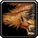
Peau robuste traitée103 Cuir léger82
Cuir léger82 Cuir immaculé80
Cuir immaculé80 Cuir épais75
Cuir épais75 Cuir lourd67
Cuir lourd67 Cuir moyen54
Cuir moyen54 Gangrecuir50
Gangrecuir50 Peau légère traitée49
Peau légère traitée49 Peau lourde traitée47
Peau lourde traitée47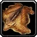
Peau moyenne traitée45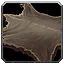
Peau immaculée43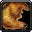
Peau épaisse traitée41 Cuir enchanté40
Cuir enchanté40 Ecaille de scorpide épaisse34
Ecaille de scorpide épaisse34 Ecaille de déviant12
Ecaille de déviant12 Écaille immaculée12
Écaille immaculée12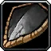
Ecaille de dragon noir7- Ecaille de scorpide7
 Chitine de silithide6
Chitine de silithide6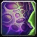
Gangrepeau6 Cuir du Magma5
Cuir du Magma5- Ecaille de dragon bleu5
 Ecaille de tortue5
Ecaille de tortue5 Cuir de chimère4
Cuir de chimère4 Cuir de sabre-de-givre4
Cuir de sabre-de-givre4 Plumacier4
Plumacier4 Carapace lourde de silithide3
Carapace lourde de silithide3 Carapace légère de silithide3
Carapace légère de silithide3 Cuir d'ours de guerre3
Cuir d'ours de guerre3 Cuir de chauve-souris primordiale3
Cuir de chauve-souris primordiale3 Ecaille de dragon rouge3
Ecaille de dragon rouge3- Ecaille de dragon vert3
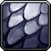
Ecaille de dragonnet noir3- Ecailles de murloc visqueuses3
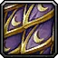
Peau de raptor3 Sel3
Sel3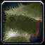
Cuir de diablosaure2 Cuir de tigre primordial2
Cuir de tigre primordial2 Ecaille chromatique brillante2
Ecaille chromatique brillante2- Ecaille d'Onyxia2
- Ecaille de dragon usée2
 Ecaille de dragonnet vert2
Ecaille de dragonnet vert2- Ecaille de déviant parfaite2
- Ecailles de murloc épaisses2
- Peau de félin des ombres2
 Plume noire2
Plume noire2 Cuir fin de kodo1
Cuir fin de kodo1 Ecaille de dragonnet rouge1
Ecaille de dragonnet rouge1- Lanières de cuir déchirées1
 Longue plume de queue1
Longue plume de queue1 Peau de loup épaisse1
Peau de loup épaisse1 Peau lourde1
Peau lourde1 Peau légère1
Peau légère1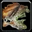
Peau moyenne1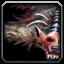
Peau robuste1 Peau épaisse1
Peau épaisse1- Rêvécaille1
- Sel de Fonderoc1
 Sel de Fonderoc raffiné1
Sel de Fonderoc raffiné1
Tissus — 15
- Fil runique173
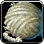
Bobine de fil raffiné84 Bobine de fil grossier55
Bobine de fil grossier55 Bobine de soie lourde55
Bobine de soie lourde55- Bobine de soie39
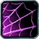
Soie d'araignée toilacier13- Soie d'araignée9
 Etoffe runique7
Etoffe runique7 Rouleau d'étoffe de soie3
Rouleau d'étoffe de soie3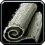
Rouleau d'étoffe de laine2 Etoffe de tisse-mage1
Etoffe de tisse-mage1 Etoffe lunaire1
Etoffe lunaire1 Gangrétoffe1
Gangrétoffe1 Rouleau d'étoffe runique1
Rouleau d'étoffe runique1- Soie d'araignée épaisse1
Éléments et matériaux d’enchantement — 16
 Essence malléable de la nature40
Essence malléable de la nature40 Essence d'eau18
Essence d'eau18 Essence de vie18
Essence de vie18 Air élémentaire15
Air élémentaire15 Eau élémentaire15
Eau élémentaire15 Terre élémentaire12
Terre élémentaire12 Essence d'air9
Essence d'air9 Essence de feu9
Essence de feu9 Essence de terre8
Essence de terre8 Noyau de terre3
Noyau de terre3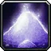
Poussière d'âme2 Poussière de rêve2
Poussière de rêve2 Poussière de vision2
Poussière de vision2 Poussière étrange2
Poussière étrange2 Coeur de feu1
Coeur de feu1 Globe d'eau1
Globe d'eau1
Pièces d’ingénierie — 1
Fils, fioles, teintures et autres composants — 31
 Perle iridescente15
Perle iridescente15 Jade12
Jade12 Petite perle satinée12
Petite perle satinée12 Teinture bleue12
Teinture bleue12 Teinture noire11
Teinture noire11 Oeil ténébreux10
Oeil ténébreux10 Acide sulfurique9
Acide sulfurique9 Citrine9
Citrine9 Teinture céruléenne9
Teinture céruléenne9 Teinture grise8
Teinture grise8 Teinture orange8
Teinture orange8 Acide de larve6
Acide de larve6 Noyau de feu6
Noyau de feu6 Noyau de lave6
Noyau de lave6 Rune de givre6
Rune de givre6 Décolorant5
Décolorant5 Mojo puissant4
Mojo puissant4 Perle noire3
Perle noire3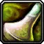
Teinture verte3 Énorme émeraude3
Énorme émeraude3- Flacon de grand mojo2
- Flacon de mojo2
 Grand croc2
Grand croc2 Agate mousse1
Agate mousse1 Bois simple1
Bois simple1 Diamant d'Azeroth1
Diamant d'Azeroth1 Grande opale1
Grande opale1 Huile de pierre-écaille1
Huile de pierre-écaille1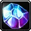
Saphir bleu1 Serre cruelle1
Serre cruelle1 Tanin ogre1
Tanin ogre1
Objets utilisés comme composants — 31
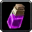
Elixir de Robustesse mineure9 Huile des ténèbres3
Huile des ténèbres3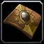
Renfort d'armure lourd2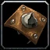
Renfort d'armure moyen2 Renfort d'armure robuste2
Renfort d'armure robuste2 Renfort d'armure épais2
Renfort d'armure épais2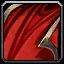
Cape en étoffe cendrée1 Ceinture élégante en cuir1
Ceinture élégante en cuir1 Charme de chance1
Charme de chance1 Diamant noir1
Diamant noir1 Elixir d'Agilité1
Elixir d'Agilité1 Elixir d'Agilité inférieur1
Elixir d'Agilité inférieur1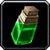
Elixir d'Agilité mineure1 Elixir de Sagesse1
Elixir de Sagesse1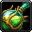
Elixir de Taille de géant1 Gants élégants en cuir1
Gants élégants en cuir1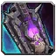
Moteur de la non-mort1 Peau des ombres1
Peau des ombres1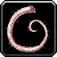
Poil de gorille grossier1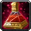
Potion de Grande rage1 Potion de mana1
Potion de mana1 Potion de mana inférieure1
Potion de mana inférieure1 Potion de mana majeure1
Potion de mana majeure1 Potion de mana mineure1
Potion de mana mineure1 Potion de rapidité1
Potion de rapidité1 Tunique élégante en cuir1
Tunique élégante en cuir1 Élixir de Force mineure1
Élixir de Force mineure1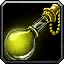
Élixir de Force supérieure1 Élixir de défense1
Élixir de défense1 Élixir de défense inférieure1
Élixir de défense inférieure1 Élixir de force d’ogre1
Élixir de force d’ogre1
Composants de chaque recette · 508 recettes
Historique des corrections
- 12 novembre 2026 (brouillon, non validé) : première liste complète des recettes de ce métier, d’après des données extraites du client, avec mention « à confirmer ». Aucune publication.[4][1]
- 13 novembre 2026 : « à confirmer » retiré des faits trouvés dans les fichiers du jeu (client 1.60.1.70862), décision t359u. L’obtention « inconnu », les zones non indiquées, les sources sans tampon de build et les valeurs seulement déduites restent à confirmer. Ce n’est pas une confirmation officielle de Blizzard, ni une mise en ligne.[4] Données du jeu (client 1.60.1.70862)
- 14 novembre 2026 : liens internes vers les fiches déjà publiées (bestiaires, listes de recettes, donjons) — lot v40, t361u. Aucun fait nouveau.[1][2][3][4]
- 17 novembre 2026 (v42) : ajout de la section « Matériaux : où les trouver » (composants de chaque recette, lus dans les fichiers du jeu, client 1.60.1.70862).[5] Données du jeu (client 1.60.1.70862)
Ce qui est confirmé / ce qui reste à confirmer
Confirmé par les sources officielles
Reste à confirmer
- Liste officielle complète des recettes, matériaux, prix et formateurs nommés : non publiée par Blizzard.
- Pour une partie des recettes, l’obtention, la source ou la zone n’était pas indiquée dans les données consultées ; ces cellules restent à « non indiqué ».
- Taux de butin : non indiqués dans les données consultées, et non publiés officiellement.
Dates clés
Sources
- [1] Récapitulatif de la présentation « Au cœur de World of Warcraft: Forever » (FR) · publié le · consulté le
World of Warcraft: Forever Deep Dive Panel Recap (EN) · publié le · consulté le - [2] Retrouvez-vous autour d’un feu de camp dans World of Warcraft: Forever (FR) · publié le · consulté le
Gather Around the Campfire in World of Warcraft: Forever (EN) · publié le · consulté le - [3] WoW: Forever Hotfixes - November 11, 2026 (EN) · publié le · consulté le
- [4] Guide Travail du cuir — liste des recettes (données du jeu (client 1.60.1.70862) (FR) · date de publication non indiquée · consulté le
Leatherworking profession guide — full recipe list (game data (client 1.60.1.70862) (EN) · date de publication non indiquée · consulté le Données du jeu — client 1.60.1.70862 - [5] WoW Forever client files, build 1.60.1.70862 — data tables and icons read from Blizzard’s official CDN (EN) · date de publication non indiquée · consulté le Données du jeu — client 1.60.1.70862
Sources officielles Blizzard Entertainment (droits réservés). Ce wiki en propose une synthèse originale ; seules de courtes citations sont reproduites. Les informations annoncées peuvent évoluer avant ou après le lancement. Les sources marquées « données du jeu » viennent des fichiers du client WoW Forever (build 1.60.1.70862). Ce n’est pas une confirmation officielle de Blizzard.
Version documentaire : World of Warcraft: Forever — annonces officielles et fichiers du jeu (client 1.60.1.70862), état documentaire 2026-11-17 · révision 17